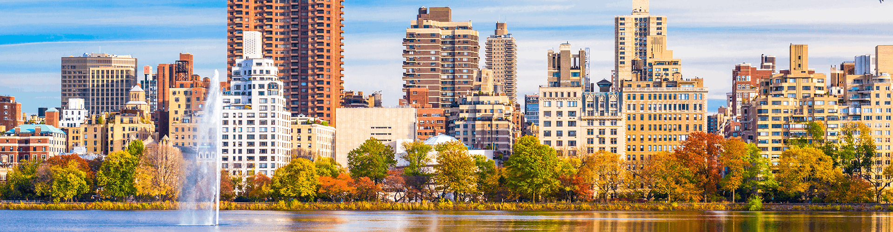

Welcome to our Beautiful City!
Join Us!The Vessel Tour
Welcome to the extraordinary world of "The Metamorphosis" – the enigmatic vessel that graces the skyline of Manhattan like a beacon of innovation and wonder. Crafted with sleek metallic brilliance, this marvel of modern engineering stands as a testament to human ingenuity. With its origins shrouded in mystery, "The Metamorphosis" captivates the imagination of all who behold it.
Join us as we explore the legends and lore surrounding this iconic structure. From whispers of extraterrestrial origins to tales of visionary architects, discover the truth behind the legend. Step into the heart of Manhattan and witness "The Metamorphosis" come to life.
Experience the thrill as lights dance along its surface, casting an ethereal glow upon the city streets. As day turns to night, watch in awe as "The Metamorphosis" takes flight, soaring high above the skyscrapers with grace and majesty.
Its presence a symbol of hope, progress, and boundless possibility. Whether you're a skeptic or a dreamer, "The Metamorphosis" invites you to join in its journey of exploration and discovery. Welcome to a world where the ordinary becomes extraordinary, and the impossible is within reach. Welcome to "The Metamorphosis" – the vessel in Manhattan.
Weather
Number of visit:
Te Rockefeller Center
Welcome to the iconic Rockefeller Center, a timeless symbol of art, culture, and innovation nestled in the heart of New York City.
Explore the rich history and vibrant energy of this historic landmark, where art deco grandeur meets modern sophistication. From its storied past as a beacon of hope during the Great Depression to its status as a bustling hub of entertainment and commerce today, the Rockefeller Center has captivated the imagination of millions around the world. Step into the bustling plaza, where the famous Prometheus statue stands guard over visitors from near and far.
Join us as we celebrate the legacy and beauty of this beloved New York City landmark. Welcome to Rockefeller Center – where history, culture, and innovation collide in spectacular fashion.
Marvel at the stunning architecture of the Art Deco skyscrapers that line the skyline, each one a testament to the vision and ambition of its creators.
Experience the magic of Rockefeller Center during the holiday season, when the iconic Christmas tree dazzles with thousands of twinkling lights and ice skaters glide gracefully across the rink below. Feel the excitement of live performances at Radio City Music Hall, or take in breathtaking views of the city from the Top of the Rock observation deck.
Whether you're strolling through the art galleries, dining at one of the world-class restaurants, or simply soaking in the vibrant atmosphere, Rockefeller Center offers something for everyone to enjoy.